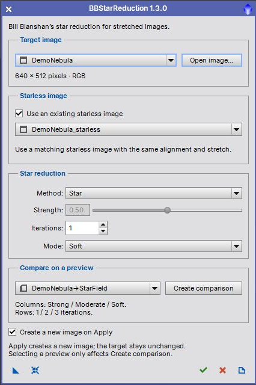
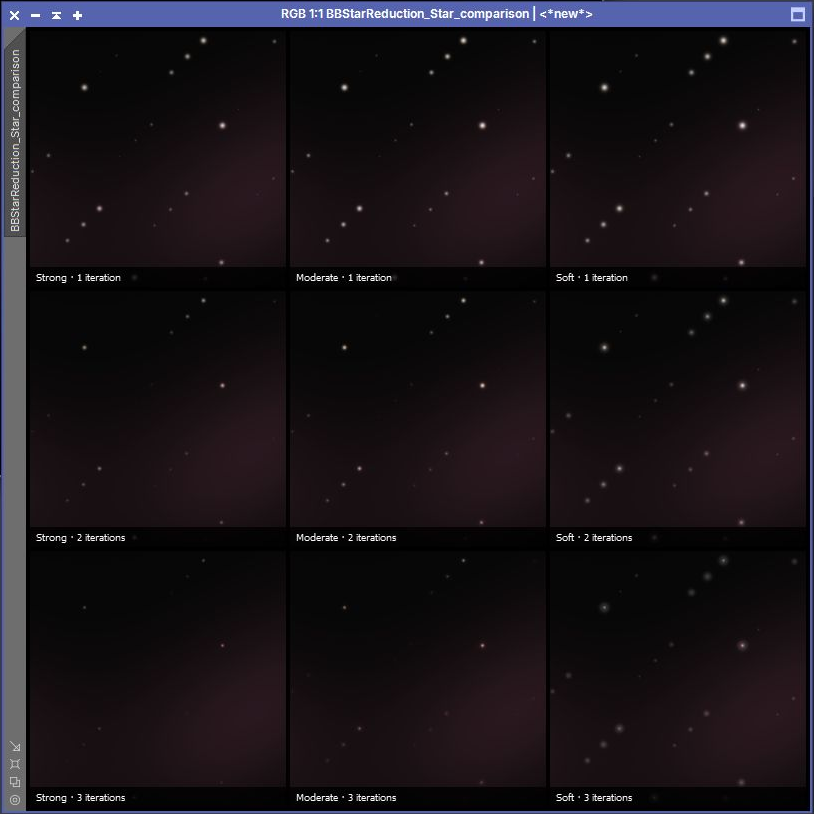

Apply Bill Blanshan's three star reduction methods to stretched images. User guide for version 1.3.0. [more]
Keywords: star reduction, Bill Blanshan, StarXTerminator, starless, TGScripts
[hide]
[hide]
BBStarReduction applies Bill Blanshan's V2 Transfer, Halo and Star PixelMath methods through a compact TGScripts interface. It can create a labeled comparison grid before processing the full image. A starless version of the target is required: generate it automatically with StarXTerminator or select an existing matching image.
Version 1.3.0 supports opening the dialog before loading an image, repeated Apply, a new-image output option, and a separate Create comparison action. It corrects the Star mode mapping so that Strong, Moderate and Soft apply the corresponding formula in both the full-image result and the comparison grid.
PixInsight 1.9.5 or later with the V8 JavaScript runtime is required. StarXTerminator is required only for automatic starless-image generation.
[hide]
The controls are grouped into Target image, Starless image, Star reduction and Compare on a preview. The bottom toolbar contains New Instance, Reset, Apply, Close and Documentation.

The screenshot shows the Star method with an existing starless image selected. Strength is disabled because this method uses Iterations and Mode. Transfer and Halo enable Strength and disable the two Star-only controls. The images in this guide are synthetic demonstration data, not an astronomical processing recommendation.
[hide]
Launch the installed script from Script > TG Scripts > BBStarReduction. To run the repository version, choose Script > Execute Script File and select src/scripts/TGScripts/BBStarReduction.js in the TGScripts repository. The dialog can open with no image loaded.
The dialog remains open and retains its selected source after each result. You can change settings and apply again. Selecting a preview never changes Apply into a preview operation. Close the dialog to inspect or edit images normally in PixInsight; it does not close the images you opened or generated.
[hide]
Stretched target
Use a grayscale or RGB main view whose pixel values have already been stretched. An STF changes the display only and does not make linear pixels suitable for these methods. A low first-channel median triggers a confirmation in the interactive dialog; this is a heuristic, not a reliable test for linear data. A process instance applied directly to a view runs without that confirmation.
Automatic starless image
With Use an existing starless image unchecked, the script runs StarXTerminator on a temporary full-image copy. Install and configure StarXTerminator, including its AI model, before using this option. BBStarReduction requires a target at least 512×512 pixels for automatic removal. It uses the same full-image starless generation for Apply and comparison, then crops to the selected preview for the grid. This can take time even for a small preview.
Existing starless image
Open both images before selecting this option. The starless image must be derived from the same target, have identical dimensions and the same grayscale or RGB channels, and have matching alignment, crop and stretch. The script checks dimensions and color channels, but cannot verify alignment or tonal equivalence. A differently stretched or shifted starless image can damage background structure or produce artifacts. The target itself cannot be selected as its starless reference. The supplied starless image is never modified.
A target change clears its starless and preview selections to avoid accidentally carrying them to a different image. Automatic starless images and temporary working images are removed after processing, including on failure. Existing image masks are not used; reduction processes the full image or the chosen comparison region.
[hide]
Method: Transfer
Apply the Transfer V2 expression. Strength controls the amount of reduction; Iterations and Mode are inactive. Transfer is the default method.
Method: Halo
Apply the Halo V2 expression. It also uses Strength and ignores Iterations and Mode. Compare it with Transfer on representative stars and bright halos to choose the result that suits the image.
Strength
Range 0.00 to 1.00; default 0.50. Increasing this value increases the requested reduction for Transfer and Halo. The original expressions use a parameter S that decreases from 0.5 to 0; the script converts the displayed strength automatically. Settings are not interchangeable with Star mode and iterations.
Method: Star
Apply the Star V2 expression with Iterations and Mode. Strength is inactive. The three modes are Strong, Moderate and Soft; the default is Soft. The selected mode is now passed correctly to the expression, including Strong.
Iterations
Star method only. Range 1 to 3; default 1. Larger values apply more reduction iterations. Inspect faint stars and surrounding structure before choosing a more aggressive setting.
Mode
Star method only. Strong, Moderate or Soft selects the corresponding branch of Bill Blanshan's expression. Try Soft first and compare the modes using the grid.
[hide]
Create a rectangular preview in the target image using PixInsight before opening the script. Select it in Compare on a preview and click Create comparison. Each preview must be at least 64×64 pixels. Only previews belonging to the selected target are listed. The preview defines a region of the target's main image; independently processed preview pixels are not used.
Transfer and Halo grids
Nine strengths from 0.1 to 0.9 are arranged in reading order: 0.1, 0.2, 0.3 in the top row; 0.4, 0.5, 0.6 in the middle; and 0.7, 0.8, 0.9 in the bottom row.
Star grid
Columns are Strong, Moderate and Soft, from left to right. Rows are 1, 2 and 3 iterations, from top to bottom.

This screenshot shows the Star comparison generated from synthetic demonstration data. Every panel is labeled with its settings. The grid explores fixed combinations for the selected method, regardless of the currently entered strength, mode or iteration count. After comparing panels, enter the preferred settings yourself and click Apply.
Comparison always creates a new image; it never replaces the target. A four-pixel black gap separates the panels and surrounds the grid. For a preview of width W and height H, the output is (3W + 16)×(3H + 16) pixels. A 256×256 preview produces a 784×784 grid. Labels overlay the bottom of each panel, so choose a region with enough space to inspect stars above them.
[hide]
Create a new image on Apply is checked by default. Results get unique names based on the target and selected method. Each application starts from the retained target, so repeated applications produce separate alternatives. Grayscale or RGB format, channel count and sample precision are retained. Full-image copies carry the target's FITS keywords, RGB working space and display stretch.
Uncheck this option to replace the full target with the result. A completed replacement creates one Undo step. Repeated in-place application acts on the already modified target and therefore accumulates reduction; restore the target with Undo before comparing independent settings. When reusing an existing starless image, its stretch must still match the target.
Processing completes on a temporary image before the replacement is committed. A failure in starless generation or reduction leaves the target unchanged. PixelMath truncates its output to the normalized range 0 to 1. These expressions are intended for normalized, stretched images; inspect saturated stars, dark areas and fine background structure before saving a final result.
[hide]
New Instance (blue triangle)
Drag to save Method, Strength, Iterations, Mode and the new-image output choice as a process icon. No image is required. The target, supplied starless image and preview are not stored: saved instances use automatic StarXTerminator when applied directly to a main view. To use an existing starless image, open the instance globally and select the paired images in the dialog. Dropping an instance onto a preview is rejected; use a main image.
Reset (blue reset icon)
Restore Transfer, Strength 0.50, one iteration, Soft mode and new-image output. The current target, starless image, source choice and preview are retained.
Apply (green check mark)
Process the full target with the selected settings and keep the dialog open. It is disabled until a target is selected.
Close (red cross)
Close the script and leave opened images and completed results available.
Documentation (page icon)
Open this guide. A script executed from the repository prefers the documentation alongside that copy.
Older process instances retain their saved numeric settings, with out-of-range values bounded to valid ranges. Legacy instances without the new-image parameter retain their former in-place behavior. Legacy target identifiers are used when that image is still open, but dropping the instance on a main view always uses the receiving view. Legacy preview selections are not restored, because Apply now always processes the full target. Star mode results may differ from older versions because the former mode-offset bug has been corrected.
[hide]
No target or preview available
Select or open a target. To make a comparison, close the script, create a preview of at least 64×64 pixels in PixInsight, reopen the script and select it. Apply does not require a preview.
StarXTerminator unavailable or failed
Select an existing starless image, or check that StarXTerminator is installed and configured. Open its process interface and verify the selected AI model. Inspect the Process Console for the specific error. A failed process produces an error message instead of leaving an empty comparison or partial result.
Starless image mismatch
Use a separate main image of the same dimensions and color channels. Also verify its alignment and stretch manually. Re-select it after changing the target.
Little change or unwanted artifacts
Verify that the target contains stars, the supplied reference is actually starless, and both images share the same stretch. Compare methods and gentler settings on a representative region. Check the Process Console if processing fails.
[hide]
Star reduction methods and V2 PixelMath expressions by Bill Blanshan. Script and TGScripts interface by Thorsten Glebe. StarXTerminator is a separate process by RC Astro. The script is distributed under the GNU General Public License, version 3; its source retains the copyright and license notice.
Copyright © 2022-2026 Dr. Thorsten Glebe